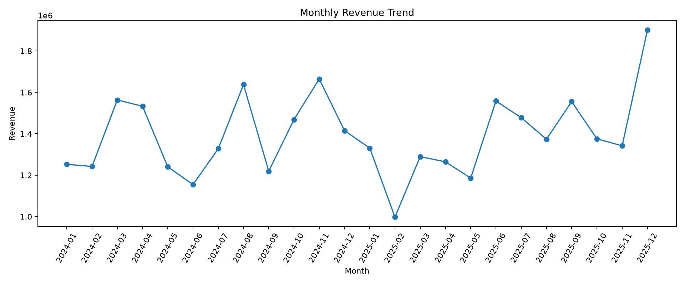
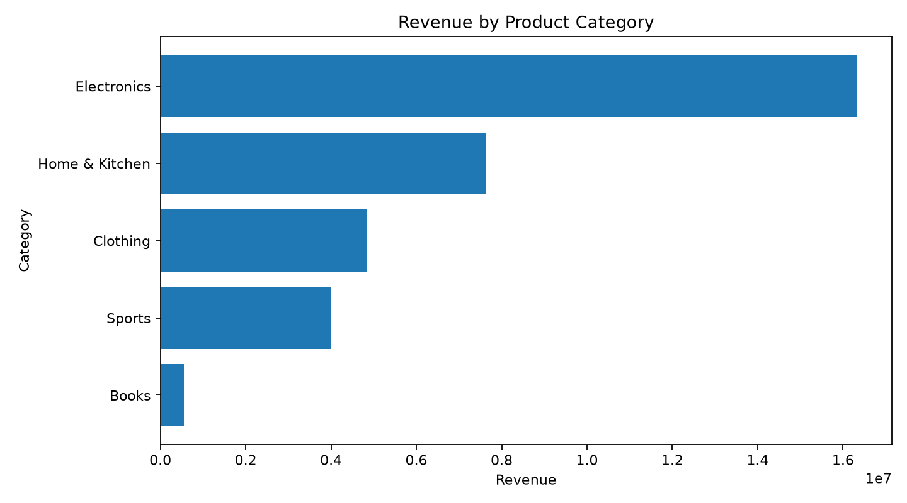
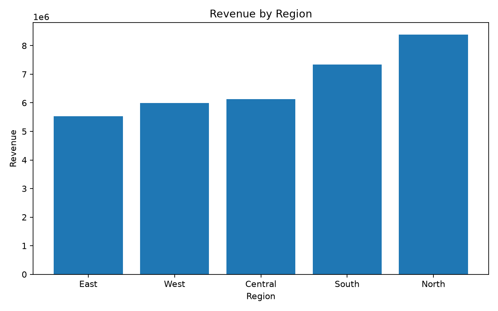
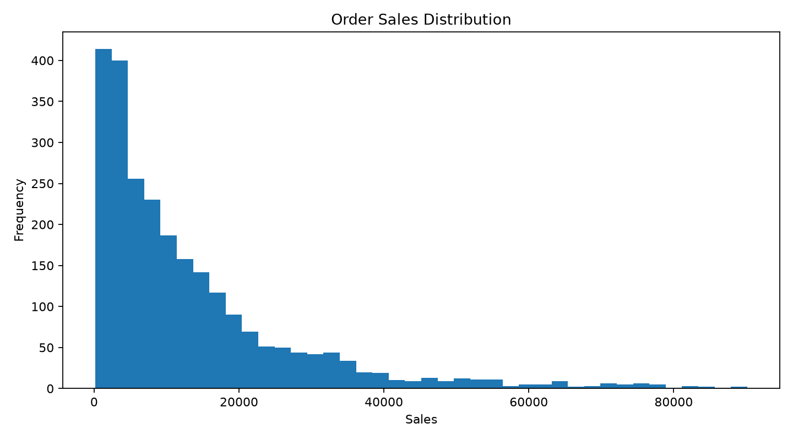
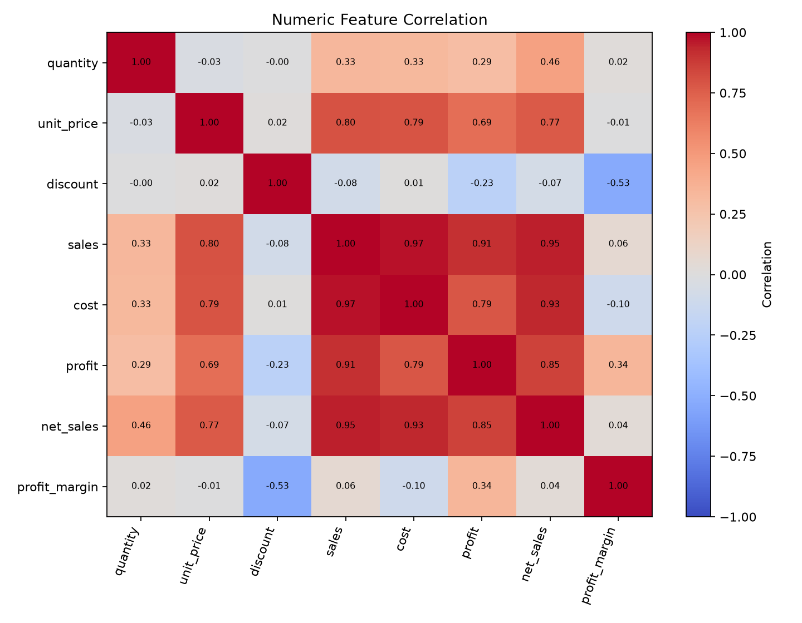
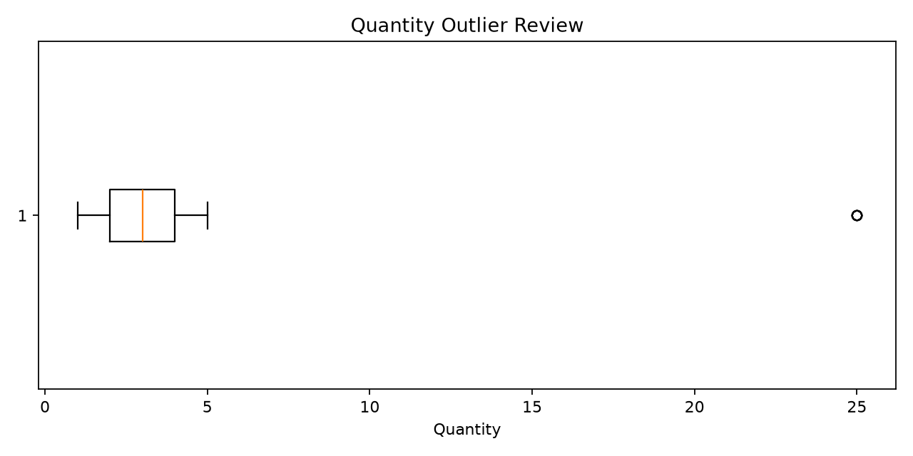

Generated from a synthetic teaching dataset. Currency is illustrative (₹); results are not real business performance.
| Metric | Result |
|---|---|
| Raw rows | 2512 |
| Exact duplicates removed | 12 |
| Rows after cleaning | 2500 |
| Missing values after cleaning | 0 |
| Quantity outliers flagged | 5 |
| category | revenue | profit | quantity |
|---|---|---|---|
| Electronics | 16,329,093.82 | 5,189,340.91 | 1851 |
| Home & Kitchen | 7,636,255.47 | 2,568,808.70 | 1744 |
| Clothing | 4,852,848.98 | 1,613,273.89 | 1926 |
| Sports | 4,005,734.07 | 1,341,364.46 | 1274 |
| Books | 545,584.54 | 176,123.39 | 868 |
| region | revenue | profit | orders |
|---|---|---|---|
| North | 8,386,805.98 | 2,720,352.68 | 613 |
| South | 7,332,529.48 | 2,418,987.80 | 547 |
| Central | 6,133,165.59 | 1,878,773.98 | 455 |
| West | 5,992,703.95 | 1,981,225.27 | 474 |
| East | 5,524,311.88 | 1,889,571.62 | 411 |






This report is descriptive, not causal. The sample data is synthetically generated and contains designed data-quality issues. Outliers are flagged for investigation rather than automatically deleted. Before using similar methods on real data, validate business definitions (especially revenue, cost, discounts, returns, and tax treatment) with the data owner.